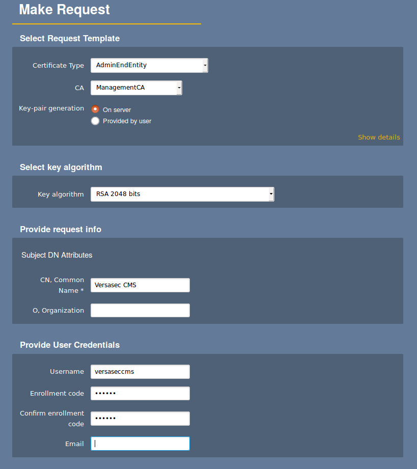
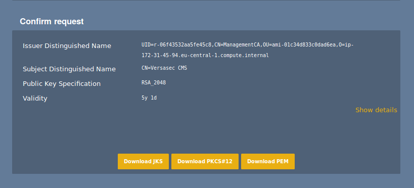
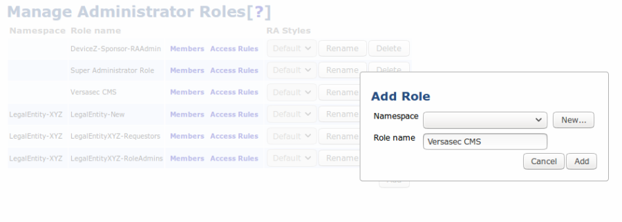
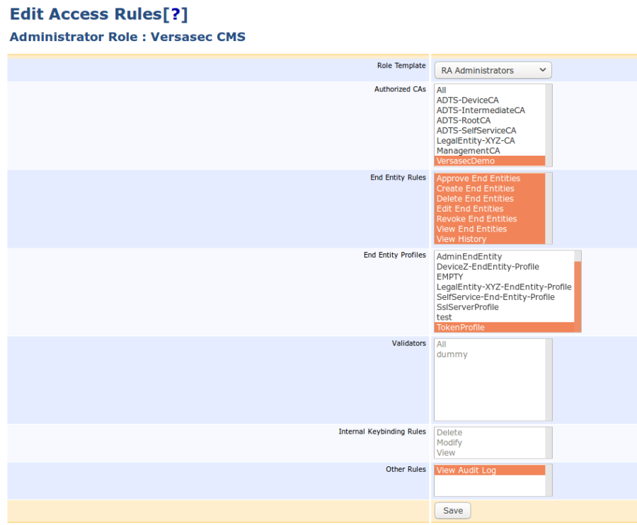
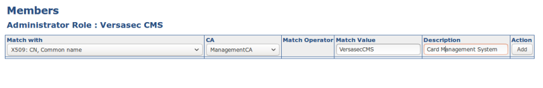
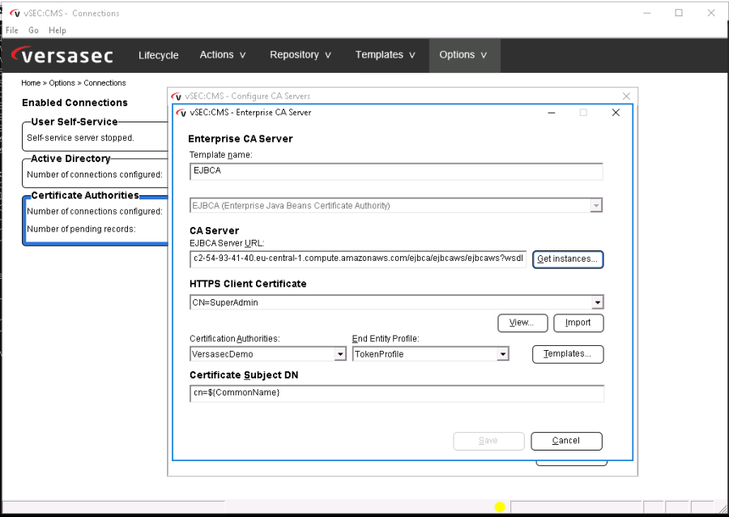

Versasec Card Management System Integration
Introduction
To illustrate an example integration between the Certificate Authority EJBCA and a Card Management System (CMS), the Versasec vSEC:CMS has been deployed in combination with EJBCA. Versasec has native integration with EJBCA, enabling a straightforward and robust integration.
This guide describes how to integrate EJBCA with the Versasec vSEC:CMS Card Management System.
Versasec vSEC:CMS
Versasec vSEC:CMS S-Series is a card management system that runs on a Windows Server. The vSEC:CMS software uses the Web Service API in EJBCA to integrate the PKI seamlessly with the CMS. During the card issuance and revocation, the vSEC:CMS makes web service calls to EJBCA to issue and revoke certificates.
Prerequisites
The following are required for the integration:
EJBCA version 6.15.0 or later
Versasec vSEC:CMS S-Series version: 5.3
Integrating vSEC:CMS with EJBCA
The EJBCA Web Service API is available over TLS with mutual certificate authentication. This means that an administrator certificate has to be issued for vSEC:CMS in order for the CMS to access EJBCA. The issued certificate also needs to be linked to a role with privileges to issue and revoke the desired certificates in EJBCA. Role-based access provides detailed control of what CAs and profiles are available for the vSEC:CMS to issue certificates from. Thus, different CMSs can have access to different CAs if needed, for different departments or customers to issue their card using their own CMS.
Integrating vSEC:CMS with EJBCA includes the following steps:
Step 1: Create Certificate for vSEC:CMS
Issuing a certificate for vSEC:CMS is done using the EJBCA RA Web. Note that profiles are required to exist and be properly configured in EJBCA. For more information, see Certificate Profiles Overview.
To issue a certificate for vSEC:CMS, log in as a suitable Administrator with permission to issue other RA Admin certificates, and do the following:
Go to the RA Web and select Make New Request.
Specify the fields to issue a PKCS#12 keystore.
 
The following example uses server-side generated keys, but client generated keys work just as well.
Step 2: Create a Role for vSEC:CMS
In order for the vSEC:CMS to be able to issue and revoke certificates, it must be added to a role to provide necessary privileges.
To create an RA Administrator role with privileges to issue and revoke the desired certificates, do the following:
In EJBCA Admin Web, select System Functions > Administrator Roles.
Click Add, specify a Role name, in this example Versasec CMS, and click Save.
When the Versasec CM group is created, click Access Rules.
Select the RA Administrator role template, specify the settings according to the following example, and click Save.

Step 3: Add Certificate to Role
With the role created, add the certificate created for the vSEC:CMS to the newly created role by editing the members of the role and clicking Add.

Step 4: Install vSEC:CMS
Install Versasec vSEC:CMS according to the installation instructions in the Administration Guide provided with the S-Series installation installer.
Note that an Active Directory must be available in order for vSEC:CMS to manage users which should get cards issued.
Step 5: Add connection to EJBCA in vSEC:CMS
Finally, create a connection to EJBCA in vSEC:CMS:
Install the issued certificate in the Windows server where vSEC:CMS is running.
Create a new connection to a CA, entering the web service URL of the EJBCA instance to connect to EJBCA and list the available profiles
Note that vSEC:CMS has native support for EJBCA and allows you to select EJBCA from the CA types list.
For more information on adding connections, refer to the Versasec documentation on vSEC:CMS S-Series Documentation - Connections.
The URL for the EJBCA Web Service API is: https://<ejbca-server-hostname>/ejbca/ejbcaws/ejbcaws?wsdl.

The integration is now completed, and you can start using Versasec vSEC:CMS to issue cards with certificates from your EJBCA Certificate Authority.
Multiple CA connections can be added to issue different cards and certificates from different CAs.
CMS Demo Workflow
A basic CMS workflow consists of:
Issue a card
Revoke the card
Unregister the card, making it available to be issued again
A brief process with two card readers includes:
Start vSEC:CMS using an operator card.
Put a blank smart card in the card reader.
In the Life Cycle view, click the Issue bubble.
A workflow is started with a choice of Card Template to use and which user in AD the card is issued for.
Once the workflow is completed, the card is issued.
Related Information
For a video tutorial showing the complete workflow, refer to https://youtu.be/el5_o-HhvOc.
Documentation on the life cycle process is available at vSEC:CMS S-Series Documentation - Lifecycle Processes.